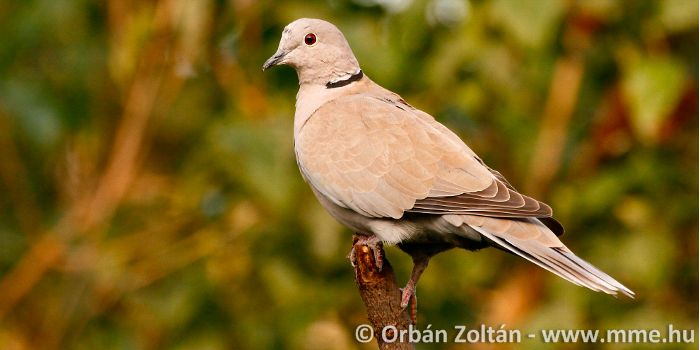

Füredi Virág vagyok, a Budapesti Corvinus Egyetem gazdaságinformatikus hallgatója. Lassan másfél éve távoktatásban tanulok, aminek sok hátulütője van, de szerencsére ennek köszönhetően sokkal többet tudok dolgozni is - egy amerikai vállalatnál, a Verizonnál egy mesterséges intelligencia fejlesztésében segédkezek. Habár nagyon szeretem a munkámat, sajnos egy belső rendszerben csinálom, így az egyetemi anyaggal nincs sok átfedésben. Ebben az önéletrajzban a kedvenc ételeimet és a kedvenc könyveimet fogom bemutatni.
további információk kereséséhez ezt a böngészőt ajánlomkedvenc ételeim
Láthatóan igazi kozmopolita vagyok gasztronómia terén, több nemzet ételeit is fogyasztom. Úgy érzem, ez generációm sajátossága, hiszen a globalizmus hatására rengeteg új kultúra tárult elénk olyan részletességgel, mint eddig sosem.
kedvenc könyveim
Általában nem olvasok modern irodalmat, legtöbbet Agatha Crhistie-t és görög filozófusok műveit szeretem. A jelenkorban inkább a hírekből, illetve videóstreamek és előadások formájában tájékozódom (pl. Bitcoin-elemzések).
Egy kedves kép egy balkáni gerléről, az elmúlt időszakban gyakran meglátogatják az ablakpárkányomat. Általában a gazdaságtörténet órákat szeretik, de amint kicsit vizuálisabb formázásokat is fogunk csinálni, biztos vagyok benne, hogy ezt a tárgyat is megszeretik.